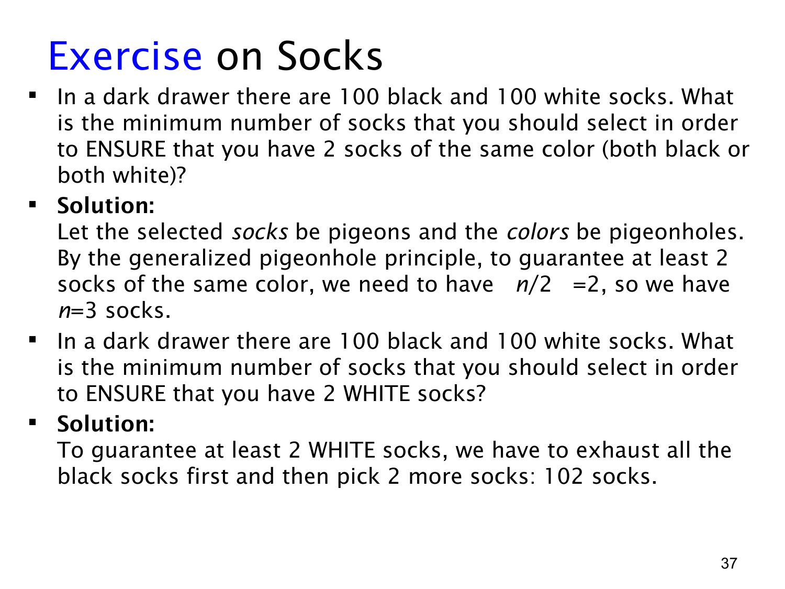

课件第 37 页讲解原文
查看这一页课件

摸袜子：保证同色一双与保证白色一双
抽屉里有 100 只黑袜子和 100 只白袜子，摸取时看不见颜色，每取出一只就不放回。题目中的 ENSURE 表示保证：即使出现最不利的取出顺序，也必须满足目标。
要保证两只同色，最少取 3 只。 对象是取出的袜子，盒子是黑色、白色两种颜色。取两只时可能一黑一白，尚未同色；第三只无论是什么颜色，都能与前两只中的一只同色。
用公式表示就是：
2(2−1)+1=3.
也可以直接用广义鸽巢原理：⌈3/2⌉=2，所以必有一种颜色至少出现两次。
要保证两只白色，最少取 102 只。 这次不能依赖“某个颜色重复”，因为重复的可能一直是黑色。最不利的顺序是先拿到 100 只黑袜，再拿到白袜。
取 101 只时，仍可能是 100 黑加 1 白，不够两只白色。取 102 只时，因为黑袜最多只有 100 只，所以白袜至少有：
102−100=2 只.
因此 102 足够，101 不保证，最小值是 102。
两题使用的数量差别很大，是因为目标不同。第一题只关心两只颜色相同，黑白都可以；第二题只接受指定的白色。不要把“可能很快就摸到两只白袜”和“无论怎样摸都一定拿到两只白袜”混淆，后者需要分析最坏情况。